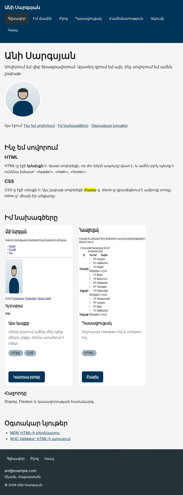
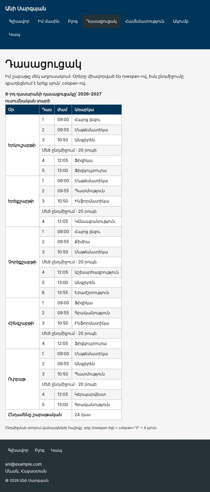

Տնային աշխատանք · HTML Դաս 09 · մինի-նախագիծ
Մենյուն դառնում է հորիզոնական՝ ճիշտ սեղմելի տարածքով, աղյուսակները ստանում են սեփական սքրոլ, իսկ footer-ը՝ վերնագիր էկրանընթերցիչի համար։
Օգտագործիր միայն Դաս 01–09-ը։ Ամեն ինչ կողք կողքի դնում ենք inline-block-ով։ Flexbox-ը, որը կլուծի բացակների և հավասարեցման խնդիրները, Դաս 11-ում է։
Մենյուն դառնում է հորիզոնական՝ մեծ սեղմելի տարածքով և ընթացիկ էջի նշումով։ Լայն աղյուսակները հեռախոսում սքրոլվում են իրենց տուփի ներսում, իսկ էջը մնում է տեղում։


Սկսիր Դաս 08-ի քո կայքից։ Եթե այն չունես, վերցրու Դաս 08-ի օրինակը։
Ընտրիր section (block), strong (inline) և .btn (inline-block)։ Computed ներդիրում գտիր display-ը։ Մկնիկը տար տարրի վրա և նայիր, թե որքան տեղ է այն զբաղեցնում․ block-ը միշտ ամբողջ տողն է։
.menu li {
display: inline-block; /* li-երը դառնում են հորիզոնական */
}
.menu a {
padding: 12px 14px; /* padding-ը հղման վրա, ոչ li-ի */
border-radius: 6px;
}
.menu a:hover,
.menu a:focus-visible {
background-color: var(--on-dark);
color: var(--secondary);
}
.menu a.is-active {
background-color: var(--dark);
}DevTools-ով չափիր հղման բարձրությունը։ Այն պետք է լինի առնվազն 44px։ Padding-ը հղման վրա է, ուստի սեղմելի է ամբողջ ուղղանկյունը, ոչ միայն տառերը։ a-ն padding ընդունում է, որովհետև global.css-ում այն արդեն inline-block է։
Ավելացրու class="is-active" ընթացիկ էջի հղմանը․ about.html-ում՝ «Իմ մասին»-ին, blog.html-ում՝ «Բլոգ»-ին և այլն։
Դաս 08-ի քարտերը inline-block են, և եթե մեկի տեքստը երկար է, դրանք սկսվում են տարբեր բարձրությունից։ Ավելացրու .card { vertical-align: top; }։
<footer>
<h2 class="visually-hidden">Կայքի ներքևի մաս</h2>
...
</footer>Դիզայնում վերնագիր չկա, բայց էկրանընթերցիչով օգտագործողը վերնագրերով է նավարկում էջը։ .visually-hidden-ը արդեն կա global.css-ում։ Համեմատիր այն display: none-ի հետ․ վերջինը թաքցնում է նաև էկրանընթերցիչից։
<div class="table-wrap">
<table>
...
</table>
</div>.table-wrap {
overflow-x: auto; /* սքրոլ միայն երբ պետք է */
overflow-y: hidden;
}DevTools → Device toolbar → 320px։ Աղյուսակը սքրոլվում է իր տուփում, իսկ էջի մնացած մասը չի շարժվում աջ ու ձախ։
| Սխալ | Ինչպես ուղղել |
|---|---|
| Մենյուի կետերի միջև կան փոքր բացակներ | Դրանք HTML-ի տողադարձերն են inline-block տարրերի միջև (Դաս 09, բաժին 05)։ Մենյուի համար դա խնդիր չէ․ Flexbox-ով կվերանան Դաս 11-ում |
| Padding-ը տվել ես li-ին, և սեղմվում են միայն տառերը | Padding-ը տեղափոխիր a-ի վրա |
| Աղյուսակը դեռ ստեղծում է էջի սքրոլ | overflow-x-ը դրված է table-ի վրա, ոչ փաթեթավորող div-ի |
Սրանք Դաս 09-ի տնային աշխատանքի կետերն են։ «մինի-նախագծում» նշվածները արդեն կատարել ես վերևի քայլերում, մնացածը կատարիր առանձին ֆայլերում կամ նույն թղթապանակում։
block, inline, inline-block։ Ամեն մեկին տուր նույն width, height, margin։ Նկարագրիր տարբերությունները։inline-ի ուղղահայաց padding-ը նկարվում է, բայց տեղ չի զբաղեցնում։inline-block-ով և 33.33%-ով։ Ցույց տուր խնդիրը, ապա լուծիր բոլոր երեք ձևով։vertical-align: top-ի ազդեցությունը տարբեր բարձրության բլոկների վրա։display: none, visibility: hidden և opacity: 0։ Ապացուցիր, որ opacity: 0-ով կոճակը դեռ սեղմվում է։.visually-hidden դասը՝ բաժնի վերնագիր ավելացնելու համար, որը դիզայնում չկա։ մինի-նախագծումoverflow-ի չորս արժեքը՝ նույն երկար տեքստով։.table-wrap { overflow-x: auto }-ի մեջ։ Ստուգիր հեռախոսի ռեժիմում։ մինի-նախագծումblock են, մենյուն՝ հորիզոնական, իսկ բովանդակությունը՝ կենտրոնացված max-width-ով։ մինի-նախագծումԵրբ բաժին 03-ի բոլոր կետերը նշված են, բացիր օրինակը և քո էջը կողք կողքի։ Բացիր երկուսի կոդն էլ խմբագրիչում։ Գտիր մեկ բան, որ դու արել ես այլ կերպ, և մտածիր՝ որն է ավելի հասկանալի և ինչու։ Քո լուծումը կարող է տարբերվել և լինել ճիշտ։